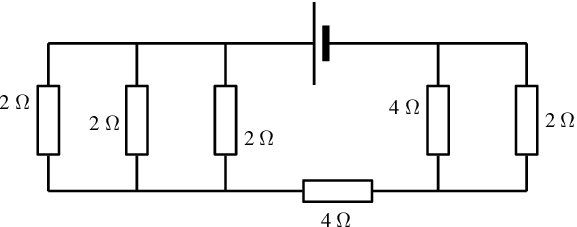
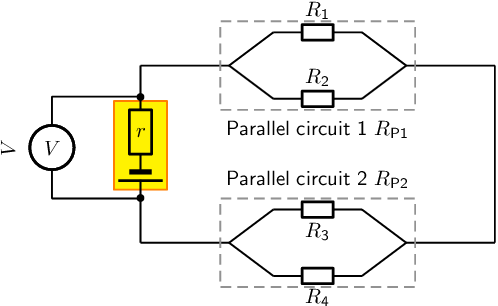
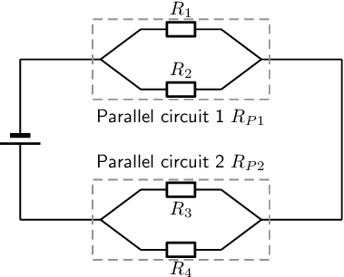
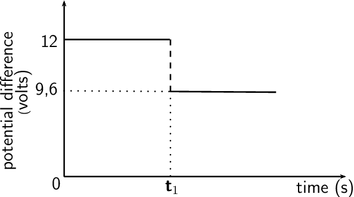
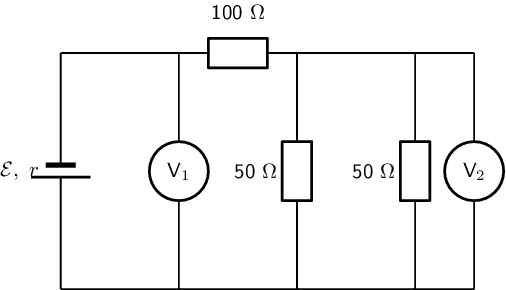

The study of electrical circuits is essential to understanding the technology that
uses electricity in the real-world. In this chapter we will focus on revising content
from Grade 11 and extending our understanding of the internal structure of a battery/cell
and how this influences what you already know about circuits.
Units and unit conversions — Physical Sciences, Grade 10, Science skills
Circuit components — Physical Sciences, Grade 10, Electric circuits
Ohm's law — Physical Sciences, Grade 11, Electric circuits
Series and parallel components — Physical Sciences, Grade 11, Electric circuits
Equations — Mathematics, Grade 10, Equations and inequalities
Series and parallel resistor networks (Revision)
In Grade 10 and Grade 11 you learnt about electric circuits and we introduced
three quantities which are fundamental to dealing with electric circuits. These quantities
are closely related and are current, voltage
(potential difference)
and resistance.
To recap:
Electrical current,
,is defined as the rate of flow of charge through a circuit.
Potential difference or voltage,
,is related to the energy gained or lost per unit charge moving between two points in a circuit. Charge moving through a battery gains energy which is then lost moving through the circuit.
Resistance,
,is an internal property of a circuit element that opposes the flow of charge. Work must be done for a charge to move through a resistor.
These quantities can be related, in circuit elements whose resistance remains constant, by Ohm's law.
Ohm's Law
For a resistor at constant temperature the ratio
is
constant. This ratio we call resistance.
This is equivalent to saying that the amount of electric current through a metal
conductor, at a constant
temperature, in a circuit is proportional to the voltage across the conductor and
can be described by
In other words, at constant temperature, the resistance of the conductor is
constant, independent of the voltage applied across it or current passed through it.
We have focused on the properties of a single component. Now we need to look at a
collection of components in a circuit.
You will often hear people switch between using the terms
voltage and
potential difference to
describe the same quantity. This is correct but very important to note.
Circuits don't consist of a single element and we've learnt about how voltage, current and resistance are affected in circuits with multiple resistors.
There are two basic layouts we consider for a network of resistors, series and parallel. Resistors in series and resistors in parallel have different features when talking about current, voltage and equivalent resistance.
Ohm's Law [NSC 2011 Paper 1]
Learners conduct an investigation to verify Ohm's law. They measure the current through a conducting wire for different potential differences across its ends. The results obtained are shown in the graph below.
Question 1
Current OR I
(1 mark)
Question 2
The graph deviates from Ohm's law at some point.
(
;
)
(2 marks)
Temperature was not kept constant.
(2 marks)
Question 3
(4 marks)
[TOTAL: 9 marks]
A circuit may consist of a combination of parallel and series networks that can in turn
be in parallel or series. We can treat parts of the total circuit independently applying the
relevant approach.
Resistors connected in series
Resistors are in series if they are consecutive elements in the sequence of the
circuit and there are no branches between them.
For
resistors in series the equivalent resistance is:
For
resistors in series the potential difference is split across the resistors:
The current is constant through the resistors.
It makes sense to remind ourselves of why these are consistent with other topics we
have covered previously:
Conservation of charge: we have learnt that charges are
not created or destroyed. This is consistent with the current being the same throughout a
resistor network that is in series. Charges aren't being added or lost or bunching up and, therefore, the rate at which charge moves past each point should be the same.
Conservation of energy: we have learnt that energy isn't
created or destroyed but transferred through work. The voltage across a resistor is the energy per
unit charge (work) required to move through the resistor. The total work done to move through a network
of resistors in series should be the sum of the work done to move through each individual resistor.
Ohm's Law, all components in series
Two ohmic resistors (
and
)are
connected in series with a cell with negligible internal resistance. Find
the resistance of
,given that the current flowing
through
and
is
~
and that
the potential difference across the cell is
~
.
=
~
.
Draw the circuit and fill in all known values.
Determine how to approach the problem.
We can use Ohm's Law to find the total resistance R in the circuit, and then calculate the unknown resistance using:
because
and
are connected
in series.
Find the total resistance
Find the unknown resistance
We know that:
and that
Since
Therefore,
Ohm's Law, series circuit
In the case of the circuit shown, calculate:
the potential difference of
,
and
across the resistors
,
,and
the resistance of
.
Determine how to approach the problem
We are given the potential difference across the cell and the current in the circuit, as well as the resistances of two of the three resistors. We can use Ohm's Law to calculate the potential difference across the known resistors. Since the resistors are in a series circuit the potential difference is
and we can calculate
.Now we can use this information to find the potential difference across the unknown resistor
.
Calculate potential difference across
Using Ohm's Law:
Calculate potential difference across
Use Ohm's Law:
Calculate potential difference across
Since the potential difference across all the resistors combined must be the same as the potential difference across the cell in a series circuit, we can find
using:
Find the resistance of
We know the potential difference across
and the current through it, so we can use Ohm's Law to calculate the value for the resistance:
Write the final answer
Equivalent resistance in a parallel network
A parallel configuration is when the current splits into a number of branches which contain
components (resistors in our case). A branch may contain multiple resistors in series and still be part of the parallel
configuration. For
branches of resistors in parallel, the equivalent resistance can be calculated from the total resistance of each branch and is:
For
branches of resistors in parallel the potential difference is the same across each of the branches:
The current is split through the branches.
Let's take a moment to see if our conservation laws still make sense:
Conservation of charge: we have learnt that charges are
not created or destroyed. This is consistent with the current splitting between the branches.
Charges aren't being added or lost or bunching up and, therefore, the total number of charges
going through the branches must be the same as the number entering the point where the
circuit branches.
Conservation of energy: we have learnt that energy isn't
created or destroyed but transferred through work. Energy per unit charge doesn't change unless
work is done therefore it makes sense that the energy per unit charge in each branch should be
the same.
Ohm's Law, resistors connected in parallel
Calculate the current (
)in this circuit if the resistors are both ohmic in nature.
Determine what is required
We are required to calculate the total current flowing in the circuit.
Determine how to approach the problem
Since the resistors are ohmic in nature, we can use Ohm's Law. However, there
are two resistors in the circuit and we need to find the total resistance.
Find the equivalent resistance in the circuit
Since the resistors are connected in parallel, the total (equivalent) resistance R is:
Apply Ohm's Law
Write the final answer
The total current flowing in the circuit is
~
.
Ohm's Law, parallel network of resistors
An
~
cell is connected to two parallel resistors of
and
respectively. Calculate the current through each of the ammeters when the switch is closed and when it is open.
Determine how to approach the problem
We need to determine the current through the cell and each of the parallel resistors. We have been given the potential difference across the cell and the resistances of the resistors, so we can use Ohm's Law to calculate the current.
There are two alternative approaches we could adopt:
we could use the fact that the potential difference across each of the resistors is the same as the
potential difference across the battery because they are in a parallel configuration and then use
Ohm's Law; or
we could determine the equivalent
resistance of the circuit and the total current and then use that to determine the current
through each of the resistors.
Both methods will result in the correct answer if you don't make any calculation errors
but one is shorter.
Now determine the current through one of the parallel resistors
We know that for a configuration with just two resistors in parallel and a cell as in this case, the potential difference across the cell is the same as the potential difference across each of the resistors in parallel. For this circuit:
Let's start with calculating the current through
using Ohm's Law:
Calculate the current through the other parallel resistor
We can use Ohm's Law again to find the current in
:
Calculate the total current
The current through each of the parallel resistors must add up to the total current through the cell:
When the switch is open
The branch through
is not complete so no current can flow through it.
This means we can ignore it completely and consider a simple circuit with a battery and a
single resistor,
,in it.
We can use Ohm's Law again to find the current in
:
Write the final answer
When the switch is closed:
The current through the cell is
~
.
The current through the
resistor is
~
.
The current through the
resistor is
~
.
When the switch is open:
The current through the
resistor is
~
.
Series and parallel networks
Aim
To investigate the changes in current and voltage when branches
of circuits are open or closed..
Apparatus
You will need the following items for this investigation:
batterys / cells
electric leads
a set of resistors and/or light bulbs
ammeters
voltmeters
Method
For this investigation, configure a circuit with resistors in both series and
in parallel. For example, try:
including parallel branches with different numbers of light bulbs in each branch
changing the numbers of light bulbs or resistors in each branch
try adding a resistor in series with the parallel network
In each branch include an ammeter and a switch. Make notes about what happens
when you remove a branch by opening the switch in the branch. What happens to the
current in the other branches. Try to predict what will happen before opening or
closing a switch and before adding or removing any light bulbs or resistors.
Discussion
Be sure to note and discuss:
whether adding a new branch increases or decreases the total current in the circuit,
whether adding a new branch increases or decreases the current in the original branches,
whether adding a resistor in series with a parallel network increases or decreases the current, and
compare what happens when you add a resistor in series with a adding another branch to the parallel network.
Series and parallel networks
For the following circuit, calculate:
the current through the cell
the potential difference across
the current through
Calculate the equivalent resistance of:
three
~
resistors in series;
two
~
resistors in parallel;
a
~
resistor in series with a
~
resistor;
a
~
resistor in series with two resistors (
~
and
~
)in parallel.
Calculate the total current in this circuit if both resistors are ohmic.
Two ohmic resistors are connected in series. The resistance of the one resistor is
~
.What is the resistance of the other resistor if a current of
~
flows through the resistors when they are connected to a voltage supply of
~
Determine the equivalent resistance of the following circuits:

Batteries and internal resistance
Up until now we have been dealing with ideal batteries in that they aren't affected
by the circuit or current in any way and provide a precise voltage until they go flat.
If you measure the potential difference across the terminals of a
battery on its own you will
get a different value to what you measure when it is in a complete circuit. The value
will be less when the battery is included in a complete circuit. Sometimes the difference
is called the lost volts. Nothing has
actually been lost but energy has been transferred.
Real batteries are made from materials which have resistance. This means that
real batteries are not just sources of potential difference (voltage), but they
also possess internal resistance. If the total potential difference source is
referred to as the emf,
,then a real battery can be
represented as an emf connected in series with a resistor
.The internal
resistance of the battery is represented by the symbol
.
Load
The external resistance in the circuit is referred to as the load.
Suppose that the battery with emf
and internal resistance
supplies a current
through an external load resistor
.Then the potential difference across the load resistor is that supplied by the battery:
Similarly, from Ohm's Law, the potential difference across the internal resistance is:
The potential difference
of the battery is related to its emf
and internal resistance
by:
The battery is the source of energy and the energy provided per unit charge (emf) passing
through the battery is equal to the total work done (potential difference) across the
components in the circuit. This can be illustrated by showing the energy per unit charge
as as function of the position in the circuit. The charge gains energy when moving through
the battery and loses energy when moving through resistors.
The emf of a battery is essentially constant because it only depends on the
chemical reaction (that converts chemical energy into electrical energy) going on
inside the battery. Therefore, we can see that the potential difference across
the terminals of the battery is dependent on the current drawn by the load. The
higher the current, the lower the potential difference across the terminals,
because the emf is constant. For the same reason, the potential difference
only equals the emf when the current is very small.
The current that can be drawn from a battery is limited by a critical, maximum value
.The more resistance in the circuit the less the current will be. Imagine that you have a wire with no resistance that you use to connect the terminals of the battery. The circuit is complete, current will flow and adding any resistance to the circuit would decrease the current. This will be
.At a current of
,
because there is no load in the circuit. Then, the equation becomes:
The maximum current that can be drawn from a battery is less than
.
Internal resistance
Determine the internal resistance of a battery that has an emf of
~
and has a
potential difference across its terminals of
~
when a
current of
~
is flowing through the battery when connected in a circuit.
Determine how to approach the problem
It is an internal resistance problem. So we use the equation:
Solve the problem
Write the final answer
The internal resistance of the battery is
~
.
Finding the internal resistance of a battery
Aim
To determine the internal resistance of a battery.
Apparatus
You will need the following items for this experiment:
battery / cell to be studied
electric leads
a set of resistors or a rheostat
ammeter
voltmeter
Method
We will set up a circuit that contains the battery we want to study in series
with a resistor. Then we will measure the potential difference across the load
as well as the current for a number of different resistors/rheostat in the
circuit. It doesn't matter if it is a different resistor each time or more
resistors in series or parallel. What matters is that the overall resistance of
the circuit changes so that the current is different each time. The reason
that doing this can tell us about the internal resistance of the battery
is because the potential difference across the internal resistance is
and we can vary I by changing the resistance of the
circuit. If the potential difference across the internal resistance is
changing and we add up all the potential differences,
we can determine the internal resistance.
Results
Record your results in a table like the one below. You can take more readings if you like.
Table 1
Setup
(
)
(
)
Resistance 1
Resistance 2
Resistance 3
Resistance 4
Resistance 5
Discussion and conclusion
Plot your data on a set of axes similar to this example. The blue
crosses represent the measured data points, the gray, dashed line is the
drawn straight line through the data
points. The best fit line you draw doesn't need to go through all the data points, it
should, in general, have as many points above and below the line.
The slope of the line can be measured and equated to
and the
intercept with the vertical axis will give you
.The
intercept with the horizontal axis would give you the maximum possible current
the battery could deliver.
Do your data form a perfectly straight line?
What errors were introduced?
Describe what is meant by the internal resistance of a real battery.
Explain why there is a difference between the emf and terminal voltage of a battery if the load (external resistance in the circuit) is comparable in size to the battery's internal resistance
What is the internal resistance of a battery if its emf is
~
and the potential difference across its terminals is
~
when a current of
~
flows in the circuit when it is connected across a load?
A 12.0 V battery has an internal resistance of 7.0
.
What is the maximum current this battery could supply?
What is the potential difference across its terminals when it is supplying a current of 150.0 mA?
Draw a sketch graph to show how the terminal potential difference varies with the current supplied if the internal resistance remains constant. How could the internal resistance be obtained from the graph?
In a hearing aid a battery supplies a current of 25.0 mA through a resistance of 400
.When the volume is increased, the resistance is changed to 100
and the current rises to 60 mA. What is the emf and internal resistance of the cell?
A battery is connected in series with a rheostat and an ammeter. When the resistance of the resistor is 10
the current is 2.0 A. When the resistance is 5
the current is 3.8 A. Find the emf and the internal resistance of the battery.
When a cell is connected directly across a high resistance voltmeter the reading is
1.50 V. When the cell is shorted through a low resistance ammeter the current is 2.5 A. What is the emf and internal resistance of the cell?
Internal resistance in circuits
Approach
The approach to solving problems that involve the internal resistance of batteries is straightforward, you just need to understand that each battery in previous examples was a source of emf,
,and a small resistor,
,and then solve as before but include
in your calculations.
An important thing to realise is that the potential difference you calculated or were given in previous examples is not the emf, it is the emf less that potential difference across the internal resistance.
To emphasise that internal resistance is an extension to what you have already done we are going to take previous worked examples and consider the internal resistance of the battery. If the internal resistance did not behave like an ohmic resistor this wouldn't be possible but we won't deal with cases like that.
Applications
Internal resistance in circuit with resistors in series
For the following circuit, calculate:
the potential differences
,
and
across the resistors
,
,and
.
the resistance of
.
the resistance of
.
If the internal resistance is
~
,what is the emf of the battery and what power is dissipated by the internal resistance of the battery?
Note
This is a very similar question to what you have seen earlier. This is to highlight the
fact that the approach when dealing with internal resistance is built on all the same
principles you have already been working with.
Determine how to approach the problem
We are given the potential difference across the cell and the current in the circuit, as well as the resistances of two of the three resistors. We can use Ohm's Law to calculate the potential difference across the known resistors. Since the resistors are in a series circuit the potential difference is
and we can calculate
.Now we can use this information to find the potential difference across the unknown resistor
.
Calculate potential difference across
Using Ohm's Law:
Calculate potential difference across
Again using Ohm's Law:
Calculate potential difference across
Since the potential difference across all the resistors combined must be the same as the potential difference across the cell in a series circuit, we can find
using:
Find the resistance of
We know the potential difference across
and the current through it, so we can use Ohm's Law to calculate the value for the resistance:
Potential difference across the internal resistance of the battery
The value of the emf can be calculated from the potential difference of the load and the potential difference across the internal resistance.
Power dissipated in the battery
We know that the power dissipated in a resistor is given by
and we know the current in the circuit, the internal resistance and the potential difference across it so we can use any form of the equation for power:
Write the final answer
Internal resistance and resistors in parallel
The potential difference across a battery measures 18 V when it is connected to two parallel resistors of
and
respectively. Calculate the current through the cell and through each of the resistors. If the internal resistance of the battery is
~
what is the emf of the battery?
First draw the circuit before doing any calculations
Determine how to approach the problem
We need to determine the current through the cell and each of the parallel resistors. We have been given the potential difference across the cell and the resistances of the resistors, so we can use Ohm's Law to calculate the current.
Calculate the current through the cell
To calculate the current through the cell we first need to determine the equivalent resistance of the rest of the circuit. The resistors are in parallel and therefore:
Now using Ohm's Law to find the current through the cell:
Now determine the current through one of the parallel resistors
We know that for a purely parallel resistor configuration, the potential difference across the cell is the same as the potential difference across each of the parallel resistors. For this circuit:
Let's start with calculating the current through
using Ohm's Law:
Calculate the current through the other parallel resistor
We can use Ohm's Law again to find the current in
:
An alternative method of calculating
would have been to use the fact that the currents through each of the parallel resistors must add up to the total current through the cell:
Determine the emf
This total current through the battery is the current through the internal resistance of the battery. Knowing the current and resistance allows us to use Ohm's law to determine the potential difference across the internal resistance and therefore the emf of the battery.
Using Ohm's law we can determine the potential difference across the internal resistance:
We know that the emf of the battery is the potential difference across the terminal summed with the potential difference across the internal resistance so:
Write the final answer
The current through the cell is
~
.
The current through the
resistor is
~
.
The current through the
resistor is
~
.
The emf of the battery is
~
.
Power in series and parallel networks of resistors
Given the following circuit:

The current leaving the battery is
~
,the total power dissipated in the external circuit is
~
,the ratio of the total resistances of the two parallel networks
is 1:2, the ratio
is 3:5 and
.
Determine the:
potential difference of the battery,
the power dissipated in
and
,and
if the battery is labelled as having an emf of
~
what is the value of the resistance of each resistor and the power dissipated in each of them.
What is required
In this question you are given various pieces of information and asked to determine the power dissipated in each resistor and each combination of resistors. Notice that the information given is mostly for the overall circuit. This is a clue that you should start with the overall circuit and work downwards to more specific circuit elements.
Calculating the potential difference of the battery
Firstly we focus on the battery. We are given the power for the overall circuit as well as the current leaving the battery. We know that the potential difference across the terminals of the battery is the potential difference across the circuit as a whole.
We can use the relationship
for the entire circuit because the potential difference is the same as the potential difference across the terminals of the battery:
The potential difference across the battery is
~
.
Power dissipated in
and
Remember that we are working from the overall circuit details down towards those for individual elements, this is opposite to how you treated this circuit earlier.
We can treat the parallel networks like the equivalent resistors so the circuit we are currently dealing with looks like:
We know that the current through the two circuit elements will be the same because it is a series circuit and that the resistance for the total circuit must be:
.We can determine the total resistance from Ohm's Law for the circuit as a whole:
We know that the ratio between
is 1:2 which means that we know:
and therefore:
Now that we know the total resistance of each of the parallel networks we can calculate the power dissipated in each:
and
These values will add up to the original power value we had for the external circuit. If they didn't
we would have made a calculation error.
Parallel network 1 calculations
Now we can begin to do the detailed calculation for the first set of parallel resistors.

We know that the ratio between
is 3:5 which means that we know
.
We also know the total resistance for the two parallel resistors in this network
is
~
.We can use the
relationship between the values of the two resistors as well as the formula for the total
resistance (
)
to find the resistor values:
We can also calculate
:
To determine the power we need the resistance which we have calculated and either the potential difference or current. The two resistors are in parallel so the potential difference across them is the same as well as the same as the potential difference across the parallel network. We can use Ohm's Law to determine the potential difference across the network of parallel resistors as we know the total resistance and we know the current:
We now have the information we need to determine the power through each resistor:
Parallel network 2 calculations
Now we can begin to do the detailed calculation for the second set of parallel resistors.
We are given
and we know
so we can calculate
from:
We can calculate the potential difference across the second parallel network by subtracting the potential difference of the first parallel network from the battery potential difference,
.
We can now determine the power dissipated in each resistor:
Internal resistance
We know that the emf of the battery is
~
but that the potential difference measured across the terminals is only
~
.The difference is the potential difference across the internal resistance of the battery and we can use the known current and Ohm's law to determine the internal resistance:
The power dissipated by the internal resistance of the battery is:
Internal resistance and headlamps [NSC 2011 Paper 1]
The headlamp and two IDENTICAL tail lamps of a scooter are connected in parallel to a battery with unknown internal resistance as shown in the simplified circuit diagram below. The headlamp has a resistance of
~
and is controlled by switch
.The tail lamps are controlled by switch
.The resistance of the connecting wires may be ignored.
The graph alongside shows the potential difference across the terminals of the battery before and after switch
is closed (whilst switch
is open). Switch
is closed at time
.

Use the graph to determine the emf of the battery.
(1 mark)
WITH ONLY SWITCH
CLOSED, calculate the following:
Current through the headlamp
(3 marks)
Internal resistance,
,of the battery
(3 marks)
BOTH SWITCHES
AND
ARE NOW CLOSED. The battery delivers a current of
~
during this period.
Calculate the resistance of each tail lamp.
(5 marks)
How will the reading on the voltmeter be affected if the headlamp burns out? (Both switches
and
are still closed.)
Write down only INCREASES, DECREASES or REMAINS THE SAME.
Give an explanation.
(3 marks)
Question 1
~
(1 mark)
Question 2.1
Option 1:
Option 2:
(3 marks)
Question 2.2
Option 1:
Option 2:
Option 3:
(3 marks)
Question 3
Option 1:
Each tail lamp:
Option 2:
Option 3:
Each tail lamp:
Option 4:
For parallel combination:
(5 marks)
Question 4
Increases
The resistance increases and the current decreases. So
(lost volts) must decrease which leads to an increase in the voltage.
(3 marks)
[TOTAL: 15 marks]
Extension: Wheatstone bridge [Not examinable]
Using what we know about parallel networks of resistors we can devise another method of finding an unknown resistance, the Wheatstone bridge. A Wheatstone bridge is a measuring instrument that is used to measure an unknown electrical resistance by balancing two legs of a bridge circuit, one leg of which includes the unknown component. Its operation is similar to the original potentiometer except that in potentiometer circuits the meter used is a sensitive galvanometer.
The Wheatstone bridge was invented by Samuel Hunter Christie in 1833 and improved and popularised by Sir Charles Wheatstone in 1843.
Despite the fact that we have given this circuit a special name, it is just a circuit containing a parallel configuration of four resistors. This is not actually a new concept, this particular configuration is just particularly useful.
In the circuit of the Wheatstone bridge,
is the unknown resistance.
,
and
are resistors of known resistance and the resistance of
is adjustable. If the ratio of
:
is equal to the ratio of
:
,then the potential difference between the two midpoints will be zero and no current will flow between the midpoints. In order to determine the unknown resistance,
is varied until this condition is reached. That is when the voltmeter reads 0 V.
Wheatstone bridge
What is the resistance of the unknown resistor
in the diagram below if
=
~
=
~
and
=
~
.
Determine how to approach the problem
The arrangement is a Wheatstone bridge. So we use the equation:
Ohm's Law governs the relationship between current and potential difference for a circuit element at constant temperature. Mathematically we write
.
Conductors that obey Ohm's Law are called ohmic conductors; those that do not are called non-ohmic conductors.
Ohm's Law can be applied to a single circuit element or the circuit as a whole (if
the components are ohmic).
The equivalent resistance of resistors in series (
)can be calculated as follows:
The equivalent resistance of resistors in parallel (
)can be calculated as follows:
Real batteries have an internal resistance.
The potential difference
of the battery is related to its emf
and internal resistance
by:
The external resistance in the circuit is referred to as the load.
Table 2
Physical Quantities
Quantity
Unit name
Unit symbol
Current (
)
Amperes
Electrical energy (
)
Joules
Power (
)
Watts
Resistance (
)
Ohms
Voltage / Potential difference (
)
Volts
Units used in electric circuits
[IEB 2001/11 HG1] - Emf
Explain the meaning of each of these two statements:
“The current through the battery is
~
.”
“The emf of the battery is
~
.”
A battery tester measures the current supplied when the battery is connected to a resistor of
~
.If the current is less than
~
,the battery is “flat” (it needs to be replaced). Calculate the maximum internal resistance of a
~
battery that will pass the test.
[IEB 2005/11 HG] The electric circuit of a torch consists of a cell, a switch and a small light bulb, as shown in the diagram below.
The electric torch is designed to use a D-type cell, but the only cell that is available for use is an AA-type cell. The specifications of these two types of cells are shown in the table below:
Table 3
Cell
emf
\begin{tabular}{c}Appliance for which\\ it is
designed\end{tabular}
\begin{tabular}{c}
Current drawn from cell\\
when connected to the\\
appliance for which it\\
is designed\end{tabular}
D
~
torch
~
AA
~
TV remote control
~
What is likely to happen and why does it happen when the AA-type cell replaces the D-type cell in the electric torch circuit?
Table 4
What happens
Why it happens
(a)
the bulb is dimmer
\begin{tabular}{c}
the AA-type cell has \\
greater internal resistance
\end{tabular}
(b)
the bulb is dimmer
\begin{tabular}{c}
the AA-type cell has\\
less internal resistance
\end{tabular}
(c)
\begin{tabular}{c}
the brightness of the\\
bulb is the same
\end{tabular}
\begin{tabular}{c}
the AA-type cell has the \\
same internal resistance
\end{tabular}
(d)
the bulb is brighter
\begin{tabular}{c}
the AA-type cell has \\
less internal resistance
\end{tabular}
[IEB 2005/11 HG1]
A battery of emf ε and internal resistance r =
~
is connected to this arrangement of resistors.

The resistances of voltmeters
and
are so high that they do not affect the current in the circuit.
Explain what is meant by “the emf of a battery”.
The power dissipated in the
~
resistor is
~
.
Calculate the current in the
~
resistor.
Calculate the reading on voltmeter
.
Calculate the reading on voltmeter
.
Calculate the emf of the battery.
[SC 2003/11] A kettle is marked
~
;
~
.
Calculate the resistance of the kettle when operating according to the above specifications.
If the kettle takes
~
to boil some water, calculate the amount of electrical energy transferred to the kettle.
[IEB 2001/11 HG1] - Electric Eels
Electric eels have a series of cells from head to tail. When the cells are activated by a nerve impulse, a potential difference is created from head to tail. A healthy electric eel can produce a potential difference of
~
.
What is meant by “a potential difference of
~
”?
How much energy is transferred when an electron is moved through a potential difference of
~
?